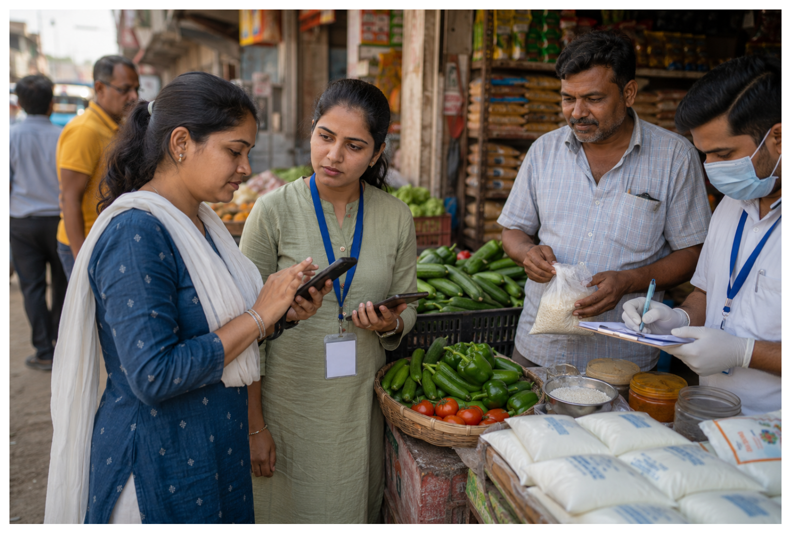

Explore our ongoing and upcoming operations focused on food purity and consumer protection.
Distributing rapid testing kits to households for detecting milk, oil, and ghee adulterants.
Organizing public awareness seminars and workshops in schools, colleges, and villages.
Deploying mobile laboratories to marketplaces for instant test results on spot food items.
Providing food safety counseling, regulatory help, and legal guidance for filing complaints.
Food adulteration is a direct threat to public health, safety, and economic security. Our campaign actively addresses these critical challenges through education, awareness, and community action across Gujarat.
Consuming toxic chemicals, non-permitted synthetic dyes, and heavy metals leads to acute poisoning and organ damage.
Contaminated water, starch, or low-quality ingredients introduce harmful pathogens, resulting in severe gastrointestinal diseases.
Regular intake of trace adulterants like urea, mineral oils, or argemone seeds poses long-term risks, including chronic disorders and cancer.
People pay premium prices for inferior, diluted, or entirely fake products, violating their basic consumer rights.
Adulteration undermines honest local farmers and producers, shifting market share to unethical operators and increasing healthcare costs.
Widespread adulteration degrades public confidence in food supply systems, making everyday grocery shopping a stressful experience.

If you suspect food adulteration or witness food safety violations in your neighborhood, hotel, or retail shop, you have the right and duty to report it. Here is the step-by-step process to file an official report:
Submit a written complaint to the designated officer of your local Municipal Corporation or District Health Office in Gujarat with samples and bills.
Register your grievance online via the national FSSAI portal at foscos.fssai.gov.in.
Call the national toll-free food safety helpline at 1800-11-2100 to seek guidance and register instant complaints.
Stuck in the process? Contact our legal aid desk for guidance on documenting evidence and drafting official letters.
Our foundation works tirelessly to promote awareness of consumer rights and standard food regulations. We believe that an informed citizen is the strongest defense against adulteration.
We educate food businesses on hygiene guidelines and FSSAI standards, while advising consumers on standard labels, FSSAI logos, shelf life checks, and chemical-free choices.
To reach every corner of Gujarat, Divy Jyot Foundation organizes public awareness events, interactive workshops, educational campaigns, and school and college seminars.
Through these outreach efforts, we demonstrate rapid adulteration tests such as detecting starch in milk or spices, and equip citizens with tools to inspect food on their own.
We are building a powerful network of dedicated volunteers committed to creating a safer food environment. As a volunteer, you can lead local detection workshops, assist in spreading awareness, and guide local consumers on reporting adulteration violations in your city.
Join Our Network Today